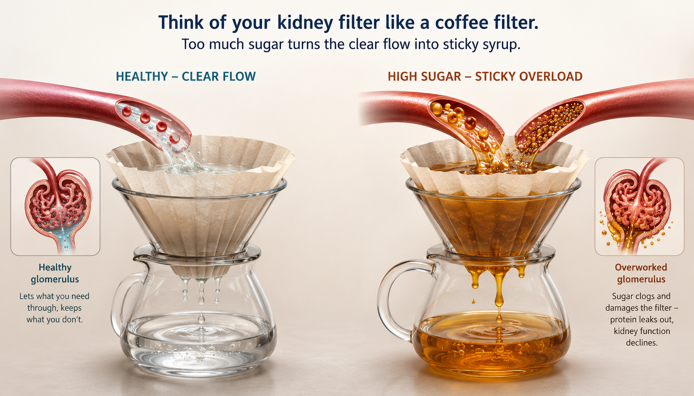

Why Sugar Matters to Your KidneysBakit Mahalaga ang Asukal sa Iyong mga BatoNgano Importante ang Asukar sa Imong mga KidneyBakit Mahalaga ing Asukal Karing Butu Mu
Steadier sugar means slower kidney damage. You do not need a perfect number — you need a safe, steady one that you and your doctor choose together. Everything below builds on that.Ang mas panatag na asukal ay nangangahulugan ng mas mabagal na pinsala sa bato. Hindi mo kailangan ng perpektong numero — kailangan mo ng ligtas at panatag na pipiliin ninyo ng iyong doktor nang magkasama. Lahat ng nasa ibaba ay nakabatay diyan.Ang mas lig-on nga asukar nagpasabot og mas hinay nga kadaot sa kidney. Dili nimo kinahanglan ang perpekto nga numero — kinahanglan nimo ang luwas ug lig-on nga pilion ninyo sa imong doktor. Ang tanan sa ubos gitukod niana.Ing mas panatag a asukal buri nang sabian a mas marimla a pamanira king butu. E mu kailangan ing perpektung numeru — kailangan mu ing ligtas at panatag a piliyan yu ning doktor mu. Ing anggang atyu king lalam mibase kaniti.
Think of each kidney as a bundle of about a million tiny strainers, called filters. When your blood sugar stays high for years, the extra sugar coats and stiffens these filters — like syrup thickening a strainer until water no longer passes cleanly. Doctors call this chronic kidney disease (CKD). The first sign is usually not pain. It is a small amount of protein leaking into the urine, which a simple test can catch long before you feel anything.Isipin ang bawat bato bilang isang bungkos ng humigit-kumulang isang milyong maliliit na salaan, na tinatawag na mga filter. Kapag mataas nang matagal ang iyong asukal sa dugo, binabalot at pinatitigas ng sobrang asukal ang mga filter na ito — parang syrup na pinapalapot ang salaan hanggang hindi na dumadaloy nang malinis ang tubig. Tinatawag itong chronic kidney disease (CKD) o malalang sakit sa bato. Ang unang palatandaan ay kadalasang hindi sakit. Ito ay maliit na protina na tumatagas sa ihi, na kayang mahuli ng simpleng test bago mo pa maramdaman ang anuman.Hunahunaa ang matag kidney isip usa ka bundok sa mga usa ka milyon nga gagmay nga salaan, gitawag og mga filter. Kon ang imong asukar sa dugo taas sulod sa mga tuig, ang sobra nga asukar mohaklap ug mopagahi niini nga mga filter — sama sa syrup nga nagpalapot sa salaan hangtod dili na molusot og limpyo ang tubig. Gitawag kini og chronic kidney disease (CKD) o laygay nga sakit sa kidney. Ang unang timailhan kasagaran dili sakit. Kini gamay nga protina nga motulo sa ihi, nga makuha sa simple nga test sa dili pa nimo mabati ang bisan unsa.Isipan me ing balang butu bilang metung a bungkus ning maygit-kumulang metung milyun a malating salakan, a ausan dang filter. Nung matas ne king malwat ing asukal king daya mu, babalutan at papatigasan ning sobrang asukal deng filter a reti — anti mo syrup a papalaputan ne ing salakan angga king ala nang malinis a pamandalos ning danum. Ausan dang chronic kidney disease (CKD) o malubhang sakit king butu. Ing mumunang tanda karaniwan e sakit. Iti malating protina a tatagas king ihi, a agyang dakpan ning simpleng test bayu me pa aramdaman nanuman.
There is a second twist most people never hear. As the filters slow down, they clear insulin and diabetes pills out of your body more slowly too. That means your medicines can build up and push your sugar too low. So kidney disease and blood sugar pull on each other in both directions — which is exactly why your targets and your medicines need to change as your kidneys change.May pangalawang ikot na halos hindi naririnig ng karamihan. Habang bumabagal ang mga filter, mas mabagal din nilang naaalis ang insulin at gamot sa diabetes mula sa katawan mo. Ibig sabihin, maaaring maipon ang iyong gamot at ibaba nang sobra ang iyong asukal. Kaya ang sakit sa bato at asukal sa dugo ay naghihilahan sa dalawang direksyon — kaya nga kailangang magbago ang iyong target at gamot habang nagbabago ang iyong mga bato.Adunay ikaduha nga liko nga halos wala madunggi sa kadaghanan. Samtang mohinay ang mga filter, mas hinay usab nilang matangtang ang insulin ug tambal sa diabetes gikan sa imong lawas. Kana nagpasabot nga mahimong matipon ang imong tambal ug ipaubos pag-ayo ang imong asukar. Busa ang sakit sa kidney ug asukar sa dugo nagbinira sa duha ka direksyon — mao gyud ni ngano kinahanglan mausab ang imong target ug tambal samtang mausab ang imong mga kidney.Atin pangaduang ikut a halos ala dang aramdaman ding karakaldwan. Habang marimla la deng filter, mas marimla da mu naman aalisan ing insulin at gamut king diabetes king katawan mu. Buri nang sabian, agyang matipun ing gamut mu at ibaba nang sobra ing asukal mu. Inya ing sakit king butu at asukal king daya migkalabit la king aduang direksyon — ita ing sanhi nung baket kailangan mo magbayu ing target at gamut mu habang mababayu la deng butu mu.

The "syrup in the filter" idea: on the left, a healthy kidney filter passes clear fluid; on the right, years of high sugar coat and stiffen the filter, so protein (albumin) leaks into the urine — measured as the urine albumin-to-creatinine ratio (UACR), the earliest, painless sign of diabetic kidney damage.
- CKD
- Chronic kidney disease
- UACR
- Urine albumin-to-creatinine ratio — the urine test that catches early protein leak
© renalcarematters.com
Understanding Your HbA1cPag-unawa sa Iyong HbA1cPagsabot sa Imong HbA1cPamintindi king Kekang HbA1c
Your HbA1c — short for hemoglobin A1c, also called glycated hemoglobin — is a blood test that acts like a report card for the past three months. Sugar in your blood sticks to the red cells that carry oxygen, and because those cells live about 90 days, the test shows your average sugar over that time, not just today's number. A result is given as a percentage: the higher the percentage, the more sugar has been coating your cells.Ang iyong HbA1c — daglat para sa hemoglobin A1c, tinatawag ding glycated hemoglobin — ay isang test sa dugo na parang report card para sa nakaraang tatlong buwan. Ang asukal sa iyong dugo ay dumidikit sa mga pulang selula na nagdadala ng oksiheno, at dahil nabubuhay ang mga selulang iyon nang halos 90 araw, ipinapakita ng test ang average ng iyong asukal sa panahong iyon, hindi lang ang numero ngayon. Ang resulta ay ibinibigay bilang porsyento: mas mataas ang porsyento, mas maraming asukal ang bumabalot sa iyong mga selula.Ang imong HbA1c — mubo alang sa hemoglobin A1c, gitawag usab og glycated hemoglobin — usa ka test sa dugo nga sama sa report card sa milabay nga tulo ka bulan. Ang asukar sa imong dugo motapot sa pula nga mga selula nga nagdala og oksiheno, ug tungod kay kadto nga mga selula mabuhi og mga 90 ka adlaw, gipakita sa test ang average sa imong asukar niadto nga panahon, dili lang ang numero karon. Ang resulta gihatag isip porsyento: mas taas ang porsyento, mas daghan ang asukar nga mohaklap sa imong mga selula.Ing kekang HbA1c — daglat para king hemoglobin A1c, ausan da mu naman glycated hemoglobin — metung yang test king daya a anti report card para king milabas a atlung bulan. Ing asukal king daya mu didikit ya karing malutung selula a magdala oksiheno, at uling mabye la deng selula a reti maygit-kumulang 90 aldo, papakit ne ning test ing average ning asukal mu king panaun a ita, e mu ing numeru ngeni. Ing resulta bibye ya bilang porsyento: mas matas ing porsyento, mas dakal ing asukal a babalut karing selula mu.
Why sugar lingers in the bloodBakit nananatili ang asukal sa dugoNgano nagpabilin ang asukar sa dugoBaket manatili ing asukal king daya
In type 2 diabetes, your body still makes insulin — the key that lets sugar leave the blood and enter your cells for energy — but the lock has grown stiff, so sugar backs up in the blood instead of being used. That is why steadying your sugar is less about "eating no sweets" and more about helping the key work again: losing a little weight, moving after meals, and the right medicines.Sa type 2 diabetes, gumagawa pa rin ang iyong katawan ng insulin — ang susi na nagpapapasok ng asukal mula sa dugo papunta sa mga selula para maging enerhiya — ngunit tumigas na ang kandado, kaya naiipon ang asukal sa dugo sa halip na magamit. Kaya ang pagpapatatag ng asukal ay hindi tungkol sa "huwag kumain ng matamis" kundi sa pagtulong na gumana muli ang susi: kaunting pagpapapayat, paggalaw pagkatapos kumain, at tamang gamot.Sa type 2 diabetes, ang imong lawas naghimo gihapon og insulin — ang yawi nga nagpasulod sa asukar gikan sa dugo ngadto sa mga selula aron mahimong enerhiya — apan ang kandado migahi na, mao nga ang asukar magpundok sa dugo imbes magamit. Mao nga ang pagpalig-on sa asukar dili mahitungod sa "ayaw pagkaon og tam-is" kondili sa pagtabang nga molihok pag-usab ang yawi: gamay nga pagpaniwang, paglihok human mokaon, ug husto nga tambal.King type 2 diabetes, gagawa ya pa mu rin ing katawan mu insulin — ing susi a magpalub king asukal manibat king daya papunta karing selula bang maging enerhiya — dapot metigas ne ing kandaru, inya matitipun ing asukal king daya imbes a magamit. Inya ing pamipatatag ning asukal e ya tungkul king "e ka mangan matamis" nune king pamanaup bang gumana pasibayu ing susi: kaunting pamipayat, pamanggalo kaibat mangan, at tamang gamut.
Your Target Numbers Are Yours AloneAng Iyong Target ay Para Lang sa IyoAng Imong Target Alang Ra KanimoIng Kekang Target Para Mu Keka
Here is something many people are surprised to hear: not everyone should aim for the same HbA1c. For many adults with diabetes and kidney disease, a target somewhere between 6.5% and 8.0% is reasonable, and your own number sits inside that range based on your age, how long you have had diabetes, your other conditions, and — most importantly — how easily your sugar drops too low. This is a decision you and your doctor make together, not a single number handed down to you.Narito ang isang bagay na ikinagugulat ng marami: hindi lahat ay dapat mag-target ng parehong HbA1c. Para sa maraming may diabetes at sakit sa bato, makatwiran ang target na nasa pagitan ng 6.5% at 8.0%, at ang iyong sariling numero ay nasa loob ng saklaw na iyon batay sa iyong edad, kung gaano katagal mo nang diabetes, ang iyong ibang karamdaman, at — pinakamahalaga — kung gaano kadaling bumaba nang sobra ang iyong asukal. Ito ay desisyong ginagawa ninyo ng iyong doktor nang magkasama, hindi isang numerong basta ibinibigay sa iyo.Aniay usa ka butang nga makapatingala sa daghan: dili tanan angay motumong sa parehas nga HbA1c. Alang sa daghang adunay diabetes ug sakit sa kidney, makataronganon ang target nga taliwala sa 6.5% ug 8.0%, ug ang imong kaugalingong numero anaa sulod niana nga range base sa imong edad, kadugay na nimo diabetes, ang imong ubang sakit, ug — labing importante — kadali sa imong asukar mokunhod pag-ayo. Kini usa ka desisyon nga inyong himoon sa imong doktor, dili usa ka numero nga basta ihatag kanimo.Atyu ka metung a bagay a makapagulat karing dakal: e la ngan dapat mag-target king parehung HbA1c. Para karing dakal a atin diabetes at sakit king butu, makatwiran ing target a atyu king pilatan ning 6.5% at 8.0%, at ing kekang sariling numeru atyu ya king lalam ning saklaw a ita base king edad mu, nung makananu kalwat na kang diabetes, deng aliwang sakit mu, at — pekamalagu — nung makananu kayapi bumaba nang sobra ing asukal mu. Iti metung yang desisyon a gagawan yu ning doktor mu, e metung a numeru a basta bibye keka.
Lower is not always saferHindi laging mas ligtas ang mas mababaDili kanunay mas luwas ang mas ubosE pane mas ligtas ing mas mababa
Chasing a very low HbA1c can backfire. Large studies found that pushing sugar down too hard in older adults with heart and kidney disease caused more dangerous low-sugar episodes and did not save lives.1 If you are frail, live alone, or have had bad low-sugar spells, a slightly higher target (closer to 8.0%) is often the safer, kinder choice — not a failure.Ang paghabol sa napakababang HbA1c ay maaaring makasama. Natuklasan ng malalaking pag-aaral na ang sobrang pagbaba ng asukal sa mga nakatatanda na may sakit sa puso at bato ay nagdulot ng mas maraming mapanganib na pagbaba ng asukal at hindi nakapagligtas ng buhay.1 Kung mahina ka, nag-iisang naninirahan, o nagkaroon na ng masamang pagbaba ng asukal, ang bahagyang mas mataas na target (mas malapit sa 8.0%) ay kadalasang mas ligtas at mas maawaing pili — hindi kabiguan.Ang paggukod sa ubos kaayo nga HbA1c mahimong makadaot. Nakit-an sa dagkong pagtuon nga ang sobra nga pagpaubos sa asukar sa tigulang nga adunay sakit sa kasingkasing ug kidney nakahatag og mas daghan nga delikado nga pagkunhod sa asukar ug wala makaluwas og kinabuhi.1 Kon huyang ka, nag-inusara nga nagpuyo, o nakasinati na og grabe nga pagkunhod sa asukar, ang gamay nga mas taas nga target (mas duol sa 8.0%) kasagaran mas luwas ug mas maluluy-on nga pilion — dili kapakyasan.Ing pamanabug king mababa kaung HbA1c malyaring makasama. Ikit da karing maragul a pamanigaral a ing sobrang pamibaba ning asukal karing matua a atin sakit king pusu at butu miglenge ya mas dakal a makatakut a pamibaba ning asukal at ala yang miligtas bie.1 Nung maina ka, mag-isang manuknangan, o mika ka na masamang pamibaba ning asukal, ing kaunting mas matas a target (mas malapit king 8.0%) karaniwan mas ligtas at mas maluluy-un a piliyan — e kabiguan.
Food as Medicine — the Filipino TablePagkain Bilang Gamot — ang Hapag-Kainang PilipinoPagkaon Isip Tambal — ang Lamesang PilipinoPamangan Bilang Gamut — ing Dulang Pilipino
The most useful idea in diabetes eating is not the glycemic index of a single food — it is the glycemic load, which is how much a food raises your sugar at the portion you actually eat. A mountain of rice and a half-cup of rice can be the same food and a completely different load. So the practical move on a Filipino table is not to ban rice, but to shrink the rice, upgrade its quality, and fill the rest of the plate with vegetables and protein first.Ang pinakakapaki-pakinabang na ideya sa pagkain para sa diabetes ay hindi ang glycemic index ng iisang pagkain — ito ay ang glycemic load, kung gaano itinataas ng pagkain ang iyong asukal sa dami na talagang kinakain mo. Ang isang bundok na kanin at kalahating tasang kanin ay maaaring parehong pagkain ngunit ganap na magkaibang load. Kaya ang praktikal na hakbang sa hapag-kainang Pilipino ay hindi ang pagbabawal ng kanin, kundi ang pagbabawas ng kanin, pag-angat ng uri nito, at pagpuno ng natitirang plato ng gulay at protina muna.Ang labing mapuslanon nga ideya sa pagkaon para sa diabetes dili ang glycemic index sa usa ka pagkaon — kini ang glycemic load, kon unsa ka daghan ang pagkaon nagpataas sa imong asukar sa gidaghanon nga imong tinuod nga gikaon. Ang usa ka bukid nga kan-on ug tunga sa tasa nga kan-on mahimong parehas nga pagkaon apan lahi kaayo nga load. Busa ang praktikal nga lakang sa Pilipinong lamesa dili ang pagdili sa kan-on, kondili ang pagkunhod sa kan-on, pagpataas sa klase niini, ug pagpuno sa nahibiling plato og utanon ug protina una.Ing pekamapakinabang a ideya king pamangan para king diabetes e ya ing glycemic index ning metung a pamangan — iti ing glycemic load, nung makananu na itas ning pamangan ing asukal mu king dakal a talagang kakanan mu. Ing metung a bunduk a nasi at kapitna tasang nasi malyaring parehung pamangan dapot lubus lang miyaliwa a load. Inya ing praktikal a dalan king dulang Pilipino e ya ing pamagbawal king nasi, nune ing pamibaba ning nasi, pamag-angat ning klase na, at pamanu ning natera king plato king gulay at protina mumuna.
✔ Fill up here✔ Dagdagan dito✔ Dugangi dinhi✔ Dagdagan keni
- Non-starchy vegetables: pechay, kangkong, sitaw, ampalaya, talongGulay na hindi starchy: pechay, kangkong, sitaw, ampalaya, talongUtanon nga dili starchy: pechay, kangkong, batong, ampalaya, talongGulay a e starchy: pechay, kangkong, sitau, ampalaya, talung
- Protein: fish, egg, chicken, tofu, monggoProtina: isda, itlog, manok, tokwa, monggoProtina: isda, itlog, manok, tokwa, monggoProtina: asan, ebun, manuk, tokwa, balatung
◐ Portion carefully◐ Timbangin ang dami◐ Sukda pag-ayo◐ Sukatan mayap
- Rice: aim for ½–1 cup; try brown or day-old, reheated riceKanin: layunin ang ½–1 tasa; subukan ang brown o kaninang lamig na pinainitKan-on: tumonga sa ½–1 tasa; sulayi ang brown o kagahapong kan-on nga giinitNasi: tumungu king ½–1 tasa; subukan ing brown o nasi a marimla a pepainit
- Fruit: 1 small piece, whole (not juice)Prutas: 1 maliit na piraso, buo (hindi juice)Prutas: 1 gamay nga buok, tibuok (dili juice)Prutas: 1 malating pidaso, mabilug (e juice)
✘ Save for rare treats✘ Itago para sa bihirang trato✘ Itago para sa panagsa nga tagana✘ Itago para king bihirang regalu
- Sugary drinks: soda, sweet juice, 3-in-1 coffeeMatatamis na inumin: soda, matamis na juice, 3-in-1 na kapeTam-is nga ilimnon: soda, tam-is nga juice, 3-in-1 nga kapeMatamis a inuman: soda, matamis a juice, 3-in-1 a kape
- White bread, pandesal piles, sweetened kakaninPuting tinapay, tambak na pandesal, minatamis na kakaninPuti nga tinapay, daghang pandesal, gipatam-is nga kakaninMaputing tinape, dakal a pandesal, pepatamis a kakanin
One free trick: eat in orderIsang libreng diskarte: kumain nang may pagkakasunodUsa ka libre nga paagi: kaon sumala sa han-ayMetung a libreng diskarte: mangan a atin pamanunud
Eat your vegetables and protein first, and your rice last. This simple order — called meal sequencing — flattens the sugar spike after the meal without changing what is on your plate. It costs nothing and works from the first day.Kainin muna ang iyong gulay at protina, at ang kanin sa huli. Ang simpleng pagkakasunod na ito — tinatawag na meal sequencing — ay pinapalapad ang pagtaas ng asukal pagkatapos kumain nang hindi binabago ang laman ng plato. Wala itong gastos at gumagana mula sa unang araw.Kan-a una ang imong utanon ug protina, ug ang kan-on sa kataposan. Kini nga simple nga han-ay — gitawag og meal sequencing — nagpatag sa pagtaas sa asukar human mokaon nga wala usba ang sulod sa plato. Wala kini gasto ug molihok gikan sa unang adlaw.Kanan mu mumuna ing gulay at protina mu, at ing nasi king tauli. Ing simpleng pamanunud a iti — ausan dang meal sequencing — papalapadan ne ing pamitas ning asukal kaibat mangan alang pamagbayu king laman ning plato. Alang gastu na at gagana ya manibat king mumunang aldo.
If you already have kidney disease, food gets one more layer: besides sugar, you may also need to watch potassium, phosphorus, salt, and protein amount. That is a bigger topic — and it is why the Filipino diabetic diet and the CKD nutrition guides below are worth reading next.Kung mayroon ka nang sakit sa bato, may isa pang dagdag ang pagkain: bukod sa asukal, maaaring kailangan mo ring bantayan ang potassium, phosphorus, asin, at dami ng protina. Mas malaking paksa iyon — kaya sulit basahin sunod ang gabay sa diyeta para sa diabetes na Pilipino at sa nutrisyon sa CKD sa ibaba.Kon aduna na kay sakit sa kidney, ang pagkaon adunay dugang nga sapaw: gawas sa asukar, mahimong kinahanglan usab nimo bantayan ang potassium, phosphorus, asin, ug gidaghanon sa protina. Mas dako kana nga hilisgotan — mao nga takos basahon sunod ang giya sa Pilipinong diabetic diet ug sa nutrisyon sa CKD sa ubos.Nung atin na kang sakit king butu, ing pamangan atin metung pang dagdag: bukud king asukal, malyaring kailangan mu mu naman bantayan ing potassium, phosphorus, asin, at dakal ning protina. Mas maragul yang paksa ita — inya sulit basan sunud ing giya king diyeta para king diabetes a Pilipino at king nutrisyon king CKD king lalam.
Movement and Blood SugarPaggalaw at Asukal sa DugoPaglihok ug Asukar sa DugoPamanggalo at Asukal king Daya
Your muscles are a sponge for sugar. When they move, they pull sugar out of the blood without needing much insulin at all — which is why a short walk after eating is one of the cheapest, most powerful tools you have. In one careful study, three 15-minute walks after meals controlled 24-hour sugar better than one longer walk.2 You do not need a gym; you need to move soon after you eat.Ang iyong mga kalamnan ay parang espongha para sa asukal. Kapag gumagalaw ang mga ito, hinihila nila ang asukal palabas ng dugo nang halos hindi nangangailangan ng insulin — kaya ang maikling lakad pagkatapos kumain ay isa sa pinakamura at pinakamakapangyarihang kasangkapan mo. Sa isang maingat na pag-aaral, ang tatlong 15-minutong lakad pagkatapos kumain ay mas kumontrol sa 24-oras na asukal kaysa sa isang mas mahabang lakad.2 Hindi mo kailangan ng gym; kailangan mong gumalaw pagkatapos kumain.Ang imong mga unod sama sa espongha para sa asukar. Kon molihok kini, biraon nila ang asukar pagawas sa dugo nga halos wala magkinahanglan og insulin — mao nga ang mubo nga lakaw human mokaon usa sa labing barato ug labing gamhanan nga himan nimo. Sa usa ka maampingong pagtuon, ang tulo ka 15-minutos nga lakaw human mokaon mas nakontrol ang 24-oras nga asukar kaysa usa ka mas taas nga lakaw.2 Dili nimo kinahanglan og gym; kinahanglan nimo molihok human mokaon.Ding kalamnan mu anti lang espongha para king asukal. Nung gagalo la, biran de ing asukal palual king daya alang kailangan a insulin — inya ing makuyad a lakad kaibat mangan metung ya karing pekamura at pekamakapangyarian a gamit mu. King metung a maingat a pamanigaral, deng atlung 15-minutu a lakad kaibat mangan mas kinontrol de ing 24-oras a asukal kesa king metung a mas makaba a lakad.2 E mu kailangan ing gym; kailangan mung galo kaibat mangan.
A simple weekly planIsang simpleng lingguhang planoUsa ka simple nga sinemanang planoMetung a simpleng lingguhang plano
Aim for a 10–15 minute walk after your two biggest meals, most days. Add gentle strength work twice a week — standing squats, wall push-ups, a bottle of water in each hand — because muscle you build stays hungry for sugar even at rest. If you have kidney disease or heart trouble, start slow and ask your doctor what intensity is safe for you.Layunin ang 10–15 minutong lakad pagkatapos ng dalawang pinakamalaking kain mo, halos araw-araw. Magdagdag ng banayad na strength work dalawang beses sa isang linggo — nakatayong squats, wall push-ups, isang bote ng tubig sa bawat kamay — dahil ang kalamnang binubuo mo ay nananatiling gutom sa asukal kahit nagpapahinga. Kung may sakit ka sa bato o puso, magsimula nang dahan-dahan at itanong sa doktor kung anong intensity ang ligtas para sa iyo.Tumonga sa 10–15 minutos nga lakaw human sa imong duha ka labing dako nga kaon, kasagaran nga adlaw. Dugangi og malumo nga strength work makaduha sa usa ka semana — nagbarog nga squats, wall push-ups, usa ka botelya sa tubig sa matag kamot — kay ang unod nga imong gitukod magpabiling gigutom sa asukar bisan sa pagpahulay. Kon aduna kay sakit sa kidney o kasingkasing, sugdi og hinay ug pangutan-a ang doktor kon unsa nga intensity ang luwas para nimo.Tumungu king 10–15 minutu a lakad kaibat ding aduang pekamaragul a pamangan mu, halos aldo-aldo. Magdagdag kang malumu a strength work aduang beses king metung a linggu — nakatayung squats, wall push-ups, metung a botelyang danum king balang gamat — uling ing kalamnan a titikdan mu manatili yang mangan king asukal maski magpainawa. Nung atin kang sakit king butu o pusu, magumpisa kang marimla at kutang me king doktor nung nanung intensity ing ligtas para keka.
Medicines That Protect Both Sugar and KidneysMga Gamot na Nagpuprotekta sa Asukal at BatoMga Tambal nga Nagpanalipod sa Asukar ug KidneyDeng Gamut a Magprotekta king Asukal at Butu
Here is the reframe that changes everything. There is now a group of medicines called SGLT2 inhibitors (sodium-glucose cotransporter-2 inhibitors) — and another called GLP-1 (glucagon-like peptide-1) receptor agonists — that started out as sugar pills but turned out to be kidney and heart protectors. In large trials, SGLT2 inhibitors slowed kidney decline and kept people off dialysis longer, even when their sugar was already fine.3 That is why your doctor may start one of these for your kidneys, not for your sugar.Narito ang pagbabago ng pananaw na nagbabago ng lahat. May grupo na ngayon ng mga gamot na tinatawag na SGLT2 inhibitors (sodium-glucose cotransporter-2 inhibitors) — at isa pang tinatawag na GLP-1 receptor agonists (glucagon-like peptide-1 receptor agonists) — na nagsimula bilang gamot sa asukal ngunit napatunayang protektor ng bato at puso. Sa malalaking pagsubok, pinabagal ng SGLT2 inhibitors ang paghina ng bato at mas matagal na iniwas ang mga tao sa dialysis, kahit maayos na ang kanilang asukal.3 Kaya maaaring magsimula ang iyong doktor ng isa sa mga ito para sa iyong bato, hindi para sa asukal.Aniay pagbag-o sa panglantaw nga nag-usab sa tanan. Aduna nay grupo sa mga tambal nga gitawag og SGLT2 inhibitors (sodium-glucose cotransporter-2 inhibitors) — ug lain nga gitawag og GLP-1 receptor agonists (glucagon-like peptide-1 receptor agonists) — nga nagsugod isip tambal sa asukar apan napamatud-an nga tigpanalipod sa kidney ug kasingkasing. Sa dagkong pagsulay, gipahinay sa SGLT2 inhibitors ang paghuyang sa kidney ug mas dugay nga gilikay ang mga tawo sa dialysis, bisan maayo na ang ilang asukar.3 Mao nga mahimong magsugod ang imong doktor og usa niini para sa imong kidney, dili para sa asukar.Atyu ka ing pamagbayu ning pamanlawe a magbayu king anggang bage. Atin nang grupu ding gamut a ausan dang SGLT2 inhibitors (sodium-glucose cotransporter-2 inhibitors) — at aliwa a ausan dang GLP-1 receptor agonists (glucagon-like peptide-1 receptor agonists) — a mengumpisa bilang gamut king asukal dapot mepatunayan a protektor da ring butu at pusu. Karing maragul a pamagsubuk, peparimla ne ning SGLT2 inhibitors ing pamaina ning butu at mas malwat a iniwas de reng tau king dialysis, maski mayap na ing asukal da.3 Inya malyaring magumpisa ing doktor mu king metung kariti para karing butu mu, e para king asukal.
Two different reasons, often confusedDalawang magkaibang dahilan, madalas ipinagkakamaliDuha ka lahi nga rason, kanunay masaypanAduang miyaliwang dahilan, pane mikakamali
It helps to know why each medicine is on your list. Some are there to lower your sugar. Others — the SGLT2 inhibitors, GLP-1 receptor agonists, the blood-pressure pills called ACE (angiotensin-converting-enzyme) inhibitors or ARBs (angiotensin-receptor blockers), and finerenone — are there to protect your kidneys and heart, and would be worth taking even if your sugar were perfect. When your sugar is already at target, do not be surprised if your doctor still keeps (or adds) a kidney-protecting one. That is modern care, not a mistake.Nakakatulong malaman kung bakit nasa listahan mo ang bawat gamot. May mga naroon para ibaba ang iyong asukal. Ang iba — ang SGLT2 inhibitors, GLP-1 receptor agonists, ang gamot sa presyon na tinatawag na ACE inhibitors o ARBs, at finerenone — ay naroon para protektahan ang iyong bato at puso, at sulit inumin kahit perpekto ang iyong asukal. Kapag nasa target na ang iyong asukal, huwag magulat kung pinapanatili (o dinadagdag) pa rin ng iyong doktor ang isang nagpuprotekta sa bato. Iyon ay makabagong pangangalaga, hindi pagkakamali.Makatabang mahibalo ngano anaa sa imong listahan ang matag tambal. Ang uban naa aron ipaubos ang imong asukar. Ang uban — ang SGLT2 inhibitors, GLP-1 receptor agonists, ang tambal sa presyon nga gitawag og ACE inhibitors o ARBs, ug finerenone — naa aron panalipdan ang imong kidney ug kasingkasing, ug takos imnon bisan perpekto ang imong asukar. Kon anaa na sa target ang imong asukar, ayaw katingala kon padayonon (o dugangan) sa imong doktor ang usa nga nagpanalipod sa kidney. Kana modernong pag-atiman, dili sayop.Makasaup a balu nung baket atyu king listahan mu ing balang gamut. Ding aliwa atyu la bang ibaba ing asukal mu. Ding aliwa — ing SGLT2 inhibitors, GLP-1 receptor agonists, ing gamut king presyon a ausan dang ACE inhibitors o ARBs, at finerenone — atyu la bang protektan deng butu at pusu mu, at sulit inuman maski perpektu ing asukal mu. Nung atyu na king target ing asukal mu, e ka magulat nung panatilyan (o dagdagan) na pa ning doktor mu ing metung a magprotekta king butu. Ita modernung pamiingat, e kamalian.
Warning Signs and Sick-Day RulesMga Palatandaan ng Panganib at Tuntunin sa Araw na MaysakitMga Timailhan sa Peligro ug Lagda sa Adlaw nga MasakitDeng Tanda ning Panganib at Tuntunin king Aldo a Masakit
Low sugar (hypoglycemia): treat now, then callMababang asukal (hypoglycemia): gamutin agad, tapos tumawagUbos nga asukar (hypoglycemia): tambali dayon, dayon tawagMababang asukal (hypoglycemia): gamutan agad, kaibat tumawag
Shaking, cold sweat, sudden hunger, pounding heart, confusion — these can mean your sugar has dropped too low. Right away, take 3–4 teaspoons of sugar, a small glass of regular (non-diet) soft drink, or a few pieces of candy, then recheck in 15 minutes. Low sugar becomes more common as kidney disease advances, because your medicines clear more slowly. If it keeps happening, your doses probably need lowering — tell your clinic this week.Panginginig, malamig na pawis, biglaang gutom, kumakabog na puso, pagkalito — maaaring ibig sabihin nito na bumaba nang sobra ang iyong asukal. Agad, uminom ng 3–4 kutsaritang asukal, isang maliit na basong regular (hindi diet) na softdrink, o ilang piraso ng kendi, tapos suriin muli pagkaraan ng 15 minuto. Nagiging mas madalas ang mababang asukal habang lumalala ang sakit sa bato, dahil mas mabagal na naaalis ang iyong gamot. Kung patuloy itong nangyayari, malamang na kailangang ibaba ang iyong dosis — sabihin sa iyong klinika ngayong linggo.Pagkurog, bugnaw nga singot, kalit nga kagutom, kusog nga pitik sa kasingkasing, kalibog — kini mahimong magpasabot nga mikunhod pag-ayo ang imong asukar. Dayon, inom og 3–4 ka kutsaritang asukar, usa ka gamay nga baso sa regular (dili diet) nga softdrink, o pipila ka buok nga kendi, dayon susiha pag-usab human sa 15 minutos. Ang ubos nga asukar mahimong mas kanunay samtang mograbe ang sakit sa kidney, kay mas hinay nga matangtang ang imong tambal. Kon magpadayon kini, lagmit kinahanglan ipaubos ang imong dosis — sultihi ang imong klinika karong semanaha.Pangayat, malamig a panas, biglang danup, kumakaba a pusu, pangalitu — malyaring buri nang sabian a bumaba nang sobra ing asukal mu. Agad, minum kang 3–4 kutsaritang asukal, metung a malating basung regular (e diet) a softdrink, o pilan a pidasu a kendi, kaibat lawan me pasibayu kaibat ning 15 minutu. Mimuma ing mababang asukal habang lumalala ing sakit king butu, uling mas marimla nang aalisan ing gamut mu. Nung patuloy yang malyari, malyaring kailangan ibaba ing dosis mu — sabian me king klinika mu ining linggu.
Sick-day rule: which pills to pauseTuntunin sa araw na maysakit: aling gamot ang ihinto pansamantalaLagda sa adlaw nga masakit: unsa nga tambal ang ihunong usaTuntunin king aldo a masakit: nanung gamut ing ipilan pansamantala
On days when you are vomiting, have diarrhea, cannot eat or drink normally, or have a high fever, some diabetes medicines can become risky. The usual advice is to hold your SGLT2 inhibitor and metformin during that acute illness until you are eating and drinking again. Do not stop your insulin on your own — call the clinic first. Ask your own doctor to write down your personal sick-day list, because the exact instructions depend on your medicines.Sa mga araw na nagsusuka ka, may pagtatae, hindi makakain o makainom nang normal, o may mataas na lagnat, may mga gamot sa diabetes na maaaring maging mapanganib. Ang karaniwang payo ay ihinto ang iyong SGLT2 inhibitor at metformin habang may malubhang karamdaman hanggang makakain at makainom ka muli. Huwag mong ihinto ang iyong insulin nang mag-isa — tumawag muna sa klinika. Hilingin sa iyong doktor na isulat ang iyong personal na listahan para sa araw na maysakit, dahil nakadepende ang eksaktong tagubilin sa iyong mga gamot.Sa mga adlaw nga nagsuka ka, adunay kalibang, dili makakaon o makainom og normal, o adunay taas nga hilanat, ang uban nga tambal sa diabetes mahimong delikado. Ang naandang tambag mao ang paghunong sa imong SGLT2 inhibitor ug metformin panahon niana nga grabe nga sakit hangtod makakaon ug makainom ka pag-usab. Ayaw hunonga ang imong insulin sa imong kaugalingon — tawag usa sa klinika. Hangyoa ang imong doktor nga isulat ang imong personal nga listahan sa adlaw nga masakit, kay ang eksaktong instruksiyon nagdepende sa imong mga tambal.Karing aldo a magsuka ka, atin pagtatae, e makapangan o makainum a normal, o atin matas a pasu, atin gamut king diabetes a malyaring maging makatakut. Ing karaniwan a payu ing pamipilan king SGLT2 inhibitor at metformin mu kapamilatan ning malubhang sakit angga king makapangan at makainum ka pasibayu. E me ipilan ing insulin mu a mag-isa — tumawag ka mumuna king klinika. Kutang me king doktor mu a isulat ne ing personal a listahan mu king aldo a masakit, uling mibase ing eksaktung tagubilin karing gamut mu.
One more danger deserves its own line. If you take an SGLT2 inhibitor and you feel very sick — nausea, vomiting, deep or fast breathing, belly pain, or unusual tiredness — you could have a serious acid build-up called diabetic ketoacidosis (DKA) even when your blood sugar reads normal. A normal sugar does not rule it out. Stop the medicine and go to the emergency room (ER); tell them you take an SGLT2 inhibitor so they can check your ketones.May isa pang panganib na karapat-dapat sa sariling linya. Kung umiinom ka ng SGLT2 inhibitor at pakiramdam mong sobrang sakit — pagduduwal, pagsusuka, malalim o mabilis na paghinga, sakit ng tiyan, o hindi karaniwang pagkapagod — maaaring may malubhang pag-ipon ng asido na tinatawag na diabetic ketoacidosis (DKA) kahit normal ang basa ng iyong asukal. Hindi ito naaalis ng normal na asukal. Ihinto ang gamot at pumunta sa emergency room (ER); sabihin sa kanila na umiinom ka ng SGLT2 inhibitor para masuri ang iyong ketones.Adunay usa pa ka peligro nga takos sa kaugalingong linya. Kon nag-inom ka og SGLT2 inhibitor ug mibati ka og grabe nga sakit — kasukaon, pagsuka, lawom o paspas nga pagginhawa, sakit sa tiyan, o dili kasagaran nga kakapoy — mahimong adunay grabe nga pundok sa asido nga gitawag og diabetic ketoacidosis (DKA) bisan normal ang basa sa imong asukar. Ang normal nga asukar dili makapapas niini. Hunonga ang tambal ug adto sa emergency room (ER); sultihi sila nga nag-inom ka og SGLT2 inhibitor aron masusi ang imong ketones.Atin metung pang panganib a dapat atin sariling linya. Nung minum kang SGLT2 inhibitor at aramdaman mung sobrang sakit — pangasuka, pagsuka, malalam o malagwang pamaginawa, sakit ning atian, o e karaniwang pangapagal — malyaring atin malubhang pamitipun ning asido a ausan dang diabetic ketoacidosis (DKA) maski normal ing basa ning asukal mu. E ne aalisan ning normal a asukal. Ipilan me ing gamut at munta ka king emergency room (ER); sabian mu karela a minum kang SGLT2 inhibitor bang masuri deng ketones mu.
What This Costs and How to Access ItMagkano ang Gastos at Paano Ito MakukuhaPila ang Gasto ug Unsaon PagkuhaMagkanu ing Gastu at Makananu Yang Makua
A recommendation you cannot afford is not a real recommendation, so let us be plain about money. In the Philippines, metformin and the older ACE-inhibitor / ARB blood-pressure pills are inexpensive and widely stocked as generics. The newer dual-protector medicines cost more: an SGLT2 inhibitor such as dapagliflozin or empagliflozin is a bigger monthly expense, though generics and branded options (for example, dapagliflozin sold locally under names like Catania or Rhea) have widened the price range. Always ask your doctor and pharmacist for the cheapest version that fits you.Ang rekomendasyong hindi mo kayang bayaran ay hindi tunay na rekomendasyon, kaya maging tapat tayo tungkol sa pera. Sa Pilipinas, ang metformin at ang mas lumang ACE-inhibitor/ARB na gamot sa presyon ay mura at laganap bilang generic. Ang mas bagong dual-protector na gamot ay mas mahal: ang SGLT2 inhibitor tulad ng dapagliflozin o empagliflozin ay mas malaking buwanang gastos, bagaman pinalawak ng generic at branded na opsyon (halimbawa, dapagliflozin na ibinebenta rito sa mga pangalang tulad ng Catania o Rhea) ang saklaw ng presyo. Palaging itanong sa iyong doktor at parmasyutiko ang pinakamurang bersyon na bagay sa iyo.Ang rekomendasyon nga dili nimo maabot dili tinuod nga rekomendasyon, busa magmatinud-anon kita bahin sa kwarta. Sa Pilipinas, ang metformin ug ang mas daan nga ACE-inhibitor/ARB nga tambal sa presyon barato ug daghang stock isip generic. Ang mas bag-o nga dual-protector nga tambal mas mahal: ang SGLT2 inhibitor sama sa dapagliflozin o empagliflozin mas dako nga binulanang gasto, bisan ang generic ug branded nga opsiyon (pananglitan, dapagliflozin nga gibaligya dinhi sa mga ngalan sama sa Catania o Rhea) nagpalapad sa range sa presyo. Kanunay pangutan-a ang imong doktor ug parmasyutiko sa labing barato nga bersiyon nga angay nimo.Ing rekomendasyon a e mu kayang bayaran e ya tunay a rekomendasyon, inya maging tapat tamu tungkul king salapi. King Pilipinas, ing metformin at ing mas matuang ACE-inhibitor/ARB a gamut king presyon mura la at laganap bilang generic. Ing mas bayung dual-protector a gamut mas mal: ing SGLT2 inhibitor anti ing dapagliflozin o empagliflozin mas maragul a buwanang gastu, maski pepalapad ding generic at branded a opsyon (alimbawa, dapagliflozin a pibaluk keni karing lagyung anti Catania o Rhea) ing saklaw ning presyo. Pigpauli kutang me king doktor at parmasyutiko mu ing pekamurang bersyon a bagay keka.
Help with coverageTulong sa saklawTabang sa coverageSaup king coverage
The Philippine Health Insurance Corporation (PhilHealth) Konsulta package covers primary-care visits and some maintenance medicines and labs, and a health maintenance organization (HMO) plan may cover part of the newer drugs — benefits change often, so confirm the current list with your provider. Buying a three-month supply, splitting higher-strength tablets when your doctor allows, and choosing generics can meaningfully lower the monthly cost. If price is the barrier, say so out loud in the clinic; there is almost always a cheaper plan that still protects your kidneys.Ang Konsulta package ng PhilHealth ay sumasaklaw sa mga pagbisita sa primary care at ilang maintenance na gamot at lab, at maaaring saklawin ng plano ng health maintenance organization (HMO) ang bahagi ng mas bagong gamot — madalas magbago ang mga benepisyo, kaya kumpirmahin ang kasalukuyang listahan sa iyong provider. Ang pagbili ng tatlong-buwang supply, paghati ng mas malakas na tableta kung pinapayagan ng doktor, at pagpili ng generic ay makabuluhang makakapagbaba ng buwanang gastos. Kung presyo ang hadlang, sabihin ito nang malakas sa klinika; halos laging may mas murang plano na nagpuprotekta pa rin sa iyong bato.Ang Konsulta package sa PhilHealth naglakip sa mga pagbisita sa primary care ug pipila ka maintenance nga tambal ug lab, ug ang plano sa health maintenance organization (HMO) mahimong molakip sa bahin sa mas bag-o nga tambal — kanunay mausab ang mga benepisyo, busa kumpirmaha ang kasamtangang listahan sa imong provider. Ang pagpalit og tulo ka bulan nga supply, pagbahin sa mas kusog nga tableta kon gitugotan sa doktor, ug pagpili og generic makapaubos og maayo sa binulanang gasto. Kon presyo ang babag, isulti kini og kusog sa klinika; halos kanunay adunay mas barato nga plano nga nagpanalipod gihapon sa imong kidney.Ing Konsulta package ning PhilHealth sasaklawan na la reng pamibisita king primary care at aliwang maintenance a gamut at lab, at malyaring saklawan ning plano ning health maintenance organization (HMO) ing dake ning mas bayung gamut — pane mibayu la reng benepisyo, inya kumpirman me ing kasalukuyang listahan king provider mu. Ing pamisali king atlung-bulan a supply, pamibiak king mas masikan a tableta nung papayagan ning doktor, at pamamili king generic makapagbaba ya king buwanang gastu. Nung presyo ing hadlang, sabian me a masikan king klinika; halos pigpauli atin mas murang plano a magprotekta pa mu rin karing butu mu.
Living Well, Long-TermMabuting Pamumuhay, PangmatagalanMaayong Pagpuyo, Dugay-DugayMayap a Pamimie, Pangmatagal
Blood sugar does not sit alone. Poor sleep, constant stress, and an unbalanced gut all nudge your sugar and your blood pressure the wrong way. Protecting a regular sleep schedule, finding a daily way to unclench, and eating enough fiber are not "extras" — they are part of the same plan that steadies your sugar and shields your kidneys. Small, repeatable habits beat dramatic ones you cannot keep.Hindi nag-iisa ang asukal sa dugo. Ang kulang na tulog, palagiang stress, at hindi balanseng bituka ay lahat naghihila sa iyong asukal at presyon sa maling direksyon. Ang pagprotekta sa regular na oras ng tulog, paghahanap ng pang-araw-araw na paraan para lumuwag, at pagkain ng sapat na fiber ay hindi "dagdag lang" — bahagi ito ng parehong plano na nagpapatatag sa iyong asukal at nagpuprotekta sa iyong bato. Ang maliliit at nauulit na ugali ay mas mahusay kaysa sa madramang hindi mo kayang panatilihin.Ang asukar sa dugo dili nag-inusara. Ang kulang nga tulog, kanunay nga stress, ug dili balanse nga tinai ang tanan nagbira sa imong asukar ug presyon sa sayop nga direksyon. Ang pagpanalipod sa regular nga oras sa tulog, pagpangita og adlaw-adlaw nga paagi sa pagpahayahay, ug pagkaon og igong fiber dili "dugang lang" — bahin kini sa parehas nga plano nga nagpalig-on sa imong asukar ug nagpanalipod sa imong kidney. Ang gagmay ug masubli nga batasan mas maayo kaysa dramatiko nga dili nimo mapadayon.E ya mag-isa ing asukal king daya. Ing kulang a tudtud, pigpauling stress, at e balanseng bituka ngan biran de ing asukal at presyon mu king maling direksyon. Ing pamagprotekta king regular a oras ning tudtud, pamanintun king pang-aldo-aldo a dalan bang lumuag, at pamangan king sapat a fiber e la "dagdag mu" — dake la ning parehung plano a magpatatag king asukal mu at magprotekta karing butu mu. Ding malati at maulit a ugali mas mayap la kesa king madramang e mu kayang panatilyan.